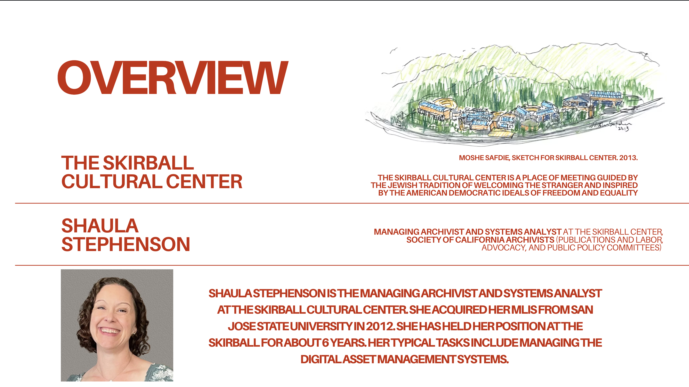
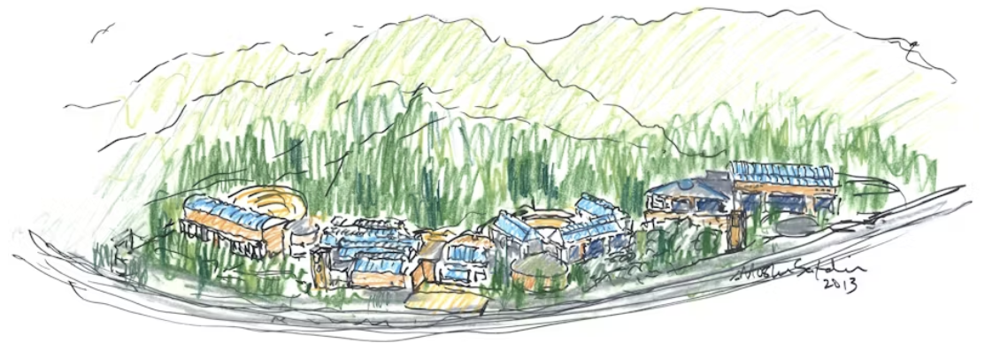
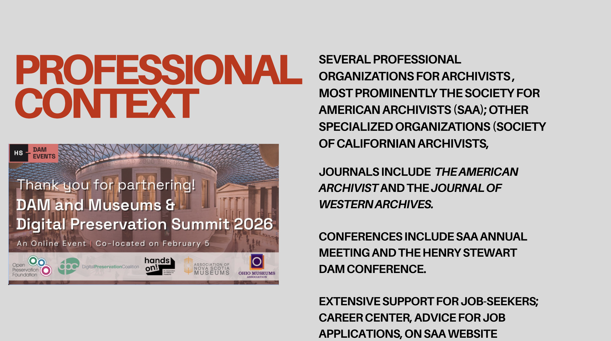
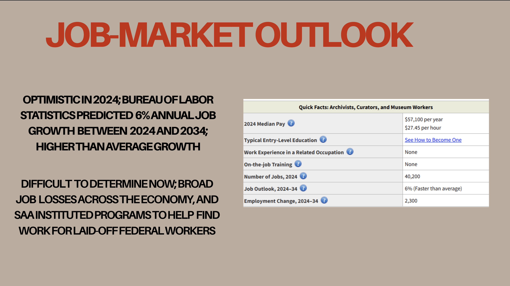
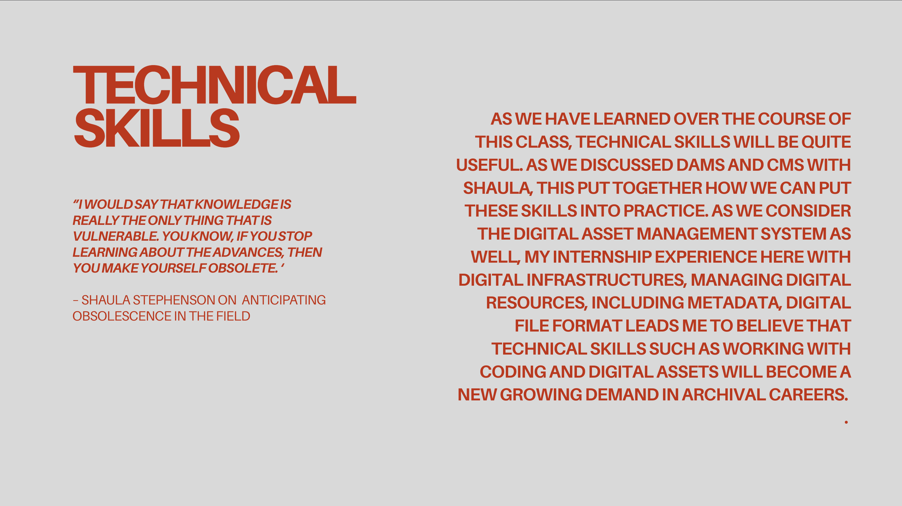
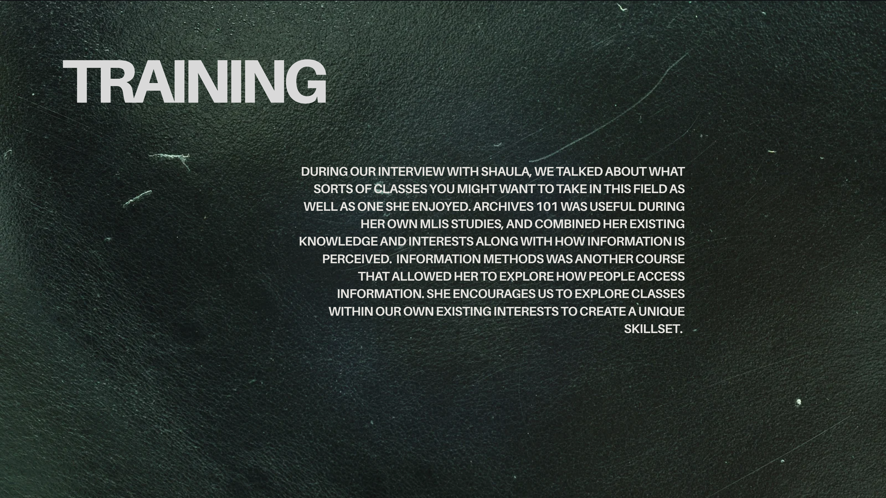
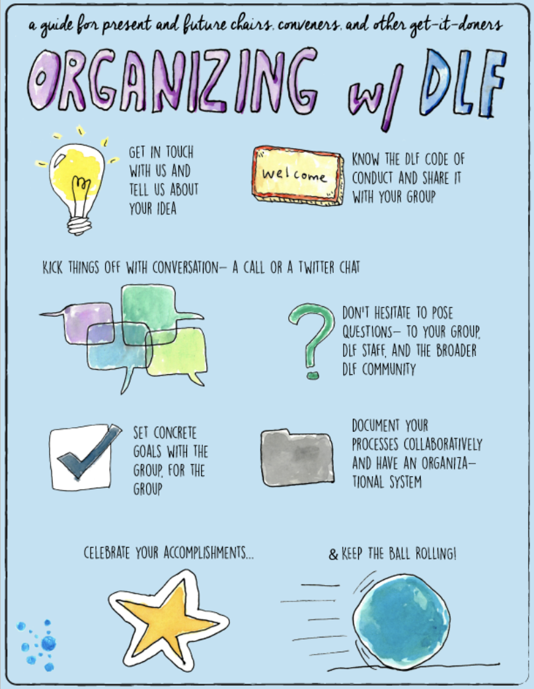

Dossier: Archival & DAMS Management
Shaula Stephenson
Managing Archivist and Systems Analyst at the Skirball Cultural Center. Acquired her MLIS from San Jose State University in 2012. She has held her position at the Skirball for about 6 years.
Her typical tasks include managing the Digital Asset Management Systems (DAMS). She is also active in the Society of California Archivists, serving on the Publications, Labor Advocacy, and Public Policy committees.
The Skirball Cultural Center is a place of meeting guided by the Jewish tradition of welcoming the stranger and inspired by the American democratic ideals of freedom and equality.

f.1–1 Shaula Stephenson, Managing Archivist.
Skirball Cultural Center
Designed by architect Moshe Safdie, the Skirball Cultural Center sits in the Santa Monica Mountains as a landmark of cultural memory and public programming.
The center houses archival collections that require sophisticated DAMS infrastructure — the primary domain of Stephenson's work.

f.1–2 Moshe Safdie, sketch for Skirball Center. 2013.
Professional Context
Professional Landscape
There are a number of professional organizations dedicated to archivists in the United States, of which the most prominent is the Society of American Archivists. It is the “oldest and largest” professional association of archivists in America, dating back to 1936 according to the SAA’s “About Me” section. However, there are a number of smaller professional organizations, either based around specific types of organizations (Association of Catholic Diocesan Archivists, Council of State Archivists, etc.) or dedicated to serving a particular state or region (Society of Californian Archivists, Los Angeles Archivists Collective, etc.). The SAA also puts on an annual meeting in the late summer to serve as a conference, and other organizations put on conferences relevant to their particular field(s) or members; the Association of Moving Image Archivists puts on an annual meeting in the fall of every year, and the Society of Californian Archivists puts on a general meeting for its dues-paying members in the spring of each year. There is also the DAM conference for museum professionals and archivists working in museums, which concerns digital asset management and curatorial management; its most recent event was focused on the impact of AI on the field. The Society of American Archivists on its own puts out a number of publications, including the academic journal The American Archivist, a bimonthly magazine Archival Outlook, and the Dictionary of Archives Terminology, a glossary service dedicated to defining important technical terms in the field. There is also the Journal of Western Archives, published by an alliance of several Western archival associations through Utah State University. The SAA has a career center for job seekers, with an up-to-date list of recent job postings and articles on various facets of the job-seeking process (e.g., salary negotiation, resume-building), helping members and those interested in archival work figure out where new jobs are being offered and how to apply for them. True to form, the SAA also hosts several listservs through its website, though one of its earliest listservs has been discontinued since 2017.

f.2–1 Professional organizations landscape.
Job-Market Outlook
Outlooks
One area of particular interest in job trends is that the SAA has made a note of trying to support laid-off federal workers, offering free membership and career guidance for those recently laid off by the Trump administration, according to the most recent issue of Archival Outlook; there seems to be an effort to try and bring former federal workers into the information profession more broadly, though it is difficult to determine how successful this effort has been. The last available data from the Bureau of Labor Statistics claims that job growth in archiving is expected to grow 6% between 2024 and 2034, twice the average growth of jobs in the United States. However, considering the decline in jobs generally since 2024, and the need to find new jobs for former federal employees, it is difficult to determine if these figures are still accurate. At the very least, relatively recently archiving was a field with a large number of job openings in the field. The job market for archivists remains difficult to determine amid broad economic disruption. The SAA has instituted programs to help find work for laid-off federal workers entering the field.

f.3–1 Job market conditions for archivists.
Technical Skills & Training
Staying Current
"I would say that knowledge is really the only thing that is vulnerable. You know, if you stop learning about the advances, then you make yourself obsolete." — Shaula Stephenson, on anticipating obsolescence
As we have learned over the course of this class, technical skills will be quite useful. As we discussed DAMS and CMS with Shaula this put together how we can put these skills into practice. In my own internship job description it stated, “Improving digital infrastructures and workflows, and supporting the organization’s records management schedule. Interest in managing digital resources, including metadata, digital file formats and content lifecycles.” A lot of this work required me to work with Shaula on the new DAMS project. Mostly through shadowing her and doing demonstrations with the museum department to ensure the new site worked efficiently. This leads me to believe that technical skills such as working with coding and digital assets will become a new growing demand in archival careers.

f.4–1 Technical skills overview.
Pathways & Continuing Education
Shaula discussed that an archives 101 course really helped her own understanding of how you can look at different pieces of information, while also considering what sort of background you already have. This could be art or history that can give you the skills in archives to create a larger picture. Information methods were also extremely helpful for Shaula during her time in her own MLIS program due exploring how people access information. Shaula drove home that many of us have specializations and we should look to taking classes in those existing interests, largely because this interest can be important in helping us as MLIS students to craft our own special and unique skills.

f.4–2 Training and continuing education.
Labor Trends
Unionization & Advocacy
Shaula brought up her work with SCA on the Committee for Labor, Advocacy, and Public Policy, wherein she helped draft the Fair Labor Principles as endorsed by SCA in 2024. Among these principles was the very important SCA standard that requires institutions share acceptable salary ranges (as Shaula put it, “not somewhere between ten dollars an hour and forty”) in order to have job listings posted by SCA. Generally, Shaula’s rhetoric was hopeful in regards to the advocacy that archivists at large are pushing for regarding fair labor principles. However, our discussion of large-scale unionization brought up some interesting issues of impracticality and existing limitations with unionization frameworks that are largely adopted by academic archives, as she explained,
"For some it's been very beneficial, and for others… and for others… a barrier to advancement because of the really stringent levels of pay that [the unions] put into place. So yeah, I don't see SCA embracing it as an official institutional stance, but a lot of the recommendations that they're putting out align with the union ideas of fair pay, protection for the staff when it's needed, that kind of thing." — Shaula Stephenson on unionization efforts
While the SCA has not officially embraced unionization, many of their recommendations align with union principles: fair pay, staff protections, and equitable labor conditions.

f.5–2 DLF Organizer's Toolkit infographic.
The Cost of a Calling
On a less bureaucratic, more relational level, Shaula also brought up the concept of “vocational awe.” Vocational awe, as defined by Fobazi Ettarh, refers to “ the set of ideas, values, and assumptions librarians have about themselves and the profession that result in beliefs that libraries as institutions are inherently good and sacred, and therefore beyond critique.” (Ettarh.) Ettarh’s article dives into the problematics of this framework for ‘librarians’ (broadly, IS professionals and all levels of staff within a glam institution) in the understanding of their own work. The valuation of ‘the library’ as sacred ground and the librarians as taking on numerous role caretaking As Shaula further illuminated, vocational awe affects interpersonal and inter-institutional understanding and valuation of archival labor. The unfortunately common notion that there is an inherent moral value and duty-boundedness to handing cultural heritage materials, artifacts, art, etc. has had innumerable consequences on both the standards we hold ourselves to as well as unreasonable expectations placed upon us. The disconnect between those practicing archival labor and those on either the user-end or management that view this labor as outside traditional definitions of work, largely due to neoliberal definitions of productivity surrounding art and histories of association between archival labor and feminized, domestic labor of caretaking. Alongside the slow deprofessionalization of the field, archivists must navigate the perfect storm for constant contention of labor value and therefore devaluation and exploitation. Thankfully, these tensions have motivated much critique and action where possible, and many archivists are learning to weaponize the valuation behind vocational awe to organizational action and collective calls for fair labor practices.

f.5–3 Vocational awe and archival labor.
5 Ways To Understand The Profession
An Annotated Bibliography
Cifor, Marika, and Jamie A. Lee. “Towards an Archival Critique: Opening Possibilities for Addressing Neoliberalism in the Archival Field.” Journal of Critical Library and Information Studies, no. 1 (January 2017.) https://doi.org/10.24242/jclis.v1i1.10
Cifor and Lee’s essay opens up an increasingly important discussion in the world of archives and beyond on the perceived inescapability of neoliberalism as economic and social order. Given archival labor is an increasingly professionalized skill-set, its constant denigration by administrative and technological forces of devaluation based on combining traditional capitalist notions of productivity and purported social justice values often gives rise to cognitive dissonance and alienation for those of us in the field. Naming neoliberalism as the driving force behind these phenomena, as well as the arbiter of the (lack of) neutrality of an archivist’s framework challenges traditional models for epistemic community formation and definition of archival labor. The fact that such recent breakthrough scholarship is being quickly adopted and listed side-by-side with labor organization resources by the SCA shows a heartening development within the field of rising consciousness surrounding archivists’ class position and agency.
Cocciolo, Anthony. "When Archivists and Digital Asset Managers Collide: Tensions and Ways Forward." The American Archivist. 2016, 79 (1): 121–136.
This article is particularly interesting given Shaula’s intended goal of the new DAMS being the achievement of communication between it and the existing Collection Management System (CMS.) One point that was confirmed by our discussion with Shaula is differing definitions for digital preservation among archivists and DAMS professionals. While the integration and value of DAMS skills has become a much more popular hat among the many that archivists are expected to wear in the ten years since the article was written, the discourse Cocciolo outlines here is ongoing and prescient for anyone interested in entering the field at this time.
Ettarh, Fobazi. "Vocational Awe in Librarianship: The Lies We Tell Ourselves." In The Library With The Lead Pipe. 2018.
Ettarh's seminal text on the concept of ‘vocational awe’ that Shaula brought up in our interview. Not having heard this term before, we found that literature surrounding this problem in the field spoke to something of an unsaid, constant polemic that we navigate in our academic-professional lives. Ettarh defines vocational awe as the precarious state of paralysis that IS workers find their roles, mediated through perceived social and institutional importance. Ettarh focuses on how this valuation and definition of expected role has taken shape over time, leading to popular ideas of the library/archive as a sacred site and its workers as martyrs. However, the context in which Shaula brought up the term was particularly interesting and relevant, as it represented how this supposed valuation of labor as invaluable is oft weaponized against labor organization and how archival labor is ultimately devalued.
"Episodes." Archives in Context.
https://archivesincontext.archivists.org/episodes/.This podcast is hosted by The Publications Board, the American Archivist Editorial Board, Committee on Public Awareness of the Society of American Archivists (SAA). Intended to, “Hear personal stories about collections, the many ways that archivists bridge the past and present, unique approaches to current challenges that the profession is facing, and the often moving and important work of memory-keeping.” Here each episode discusses challenges within the archival profession, individual archivists and their work in the field.
Gingris, Jarrod (moderator), Meyer, Kendra, Stephenson, Shaula and Stein, Tammi (panelists.) Panel discussion. Connecting the Dots: Integrating DAM into the Museum and Cultural Heritage’s Technology Ecosystem, DAM and Museums 2026. 5 February 2026, Henry Stewart DAM Events. Youtube. https://www.youtube.com/watch?v=EkqgFA6oo2I
This recent panel with our interviewee Shaula Stephenson and other DAMS managers working in GLAMs offers much insight into current discourse surrounding the ecosystem of digital preservation and management in archives. The Henry Stewart DAM Conference is one of the largest events for the field in the world, and a specific series focus on DAM and cultural heritage institutions shows that there is massive interest in fostering dialogue between the more corporate side of DAMS and that of public-facing institutions like the Skirball, the American Museum of Natural History, and the David Zwirner Gallery. Shaula touches on much of the same content as she did in our interview, but hearing perspectives, problems, and solutions from other GLAM workers offers great insight into the state of the field.

f.6–1 Annotated bibliography overview.
Our Interview with Shaula Stephenson
I wanted to start off by having you introduce yourself and some of your daily duties at the Skirball.
Hey, well, my name is Shaula Stephenson. I am the archivist and Systems Analyst at the Skirball Cultural Center. I've worked here on-and-off for about 15 years, but I've been the managing archivist for the past, wow, uhm, six… that snuck up on me.
Anyway, my day to day, it can vary greatly. In general, I will be managing the Digital Asset Management System, which holds digital and digitized photographs as well as documentation that tracks the physical and conceptual development of the Skirball. I have a paper collection of the Skirball's history and as Emily can attest, we have a digitized collection of the founding president's correspondence, which still being worked through. And I am actually in the process of implementing a new DAM system to manage our digital collections. So part of my day goes to figuring that out, recreating the metadata, getting assets migrated over. Some of it goes to answering reference questions from members of staff who are looking for certain assets. And some of it, since I have new shelving, goes to putting files back on shelves, removing them from boxes and putting them on shelves. I also, oh, what is the word I'm looking for? I don't really manage the retention schedule, but I facilitate. I make sure that the people who need to review their records are aware of when that's going to happen. And then I'm in charge of keeping records of what is destroyed and arranging for it to be picked up and securely shredded. What else do I do? I think that's a pretty good start. Does that bring up any questions for anyone?
I mean, I suppose, I'm curious about what led you to Skirball specifically. I mean, I did a little snooping on LinkedIn and I see you worked at The Hammer before this. I'm just curious, generally, what interested you in the Skirball?
It was actually, it was a pure coincidence that brought me here. I was still working on my MLIS at San Jose State. And my preservation professor was the archivist up at Mount St. Mary's University, which is just up the hill. And since she was local, I wanted to find out about doing an internship with her, but she didn't have the space or an extra computer to accommodate me. And so she asked, you know, what did you think about the digital part of the preservation classes? I thought it was really interesting. She says, "Good, I have a friend down the hill who could use your help." And so she introduced me to Peter, who was the archivist here at the time, and I started interning. The internship turned into an independent study, and then I went off and did other things. And they said, hey, we have all these video tapes that we need digitized in anticipation of the opening of our last building, and we have some money. So I came and worked part time, and I kept doing that even after I got the job at the Hammer because that was also a part time gig. And finally, it look like the job at the Hammer was going to be parlayed into full time. And I realized that I really liked being a Skirball. I liked people. I liked the mission. I liked the very broad variety of materials I got to work with. So I approached our executive vice president and I said, "Here is the deal. You know, I would really love to stay, but it needs to be full time." And so they agreed to hire me on a full time basis and here I am 10 years after that. So the first five years, five to six years were part time, in and out doing other things… I think my path to library school is equally weird, if you wanna hear about that. But.
Yeah, I was about to ask about that.
So I, when I was in undergrad, I got my degrees in European Studies in political science. So extremely useful. Managed to use those to start working at the LA County Museum of Art right after graduation. And I stayed there for quite a few years, working variously in the registrar's office, which sort of gave me a taste for databases and organizing things, and then into the rights and reproductions department, which gave me a pretty firm foundation in copyright law, visual copyright law at least. Then I decided I wanted to make more money and I moved to a law firm, where I worked as a patent and trademark secretary for about eight years. And after I had kind of learned what there was to learn and, realized that unless I wanted to go back to school, become a lawyer, I kind of had hit the limit on what I would know about this field, realizes I didn't wanna keep doing it. And my friend who was the law librarian said to me, and I am not, I'm not even misquoting, "You like books. You should go to library school!" [laughs] And so I started looking around and I knew I needed to keep working to pay my bills and found San Jose State, which allowed me to do that and apply during my lunch break and got in. So for the first year and a half of the program, I was still working full time. But then I got laid off and I was able to go to school full time and do internships and things like that, which of course led me to where I am and help me to make a lot of really good relationships in the field. That's my weird story.
Pardon me, been a bit under the weather lately. I'm Dane Beatie, I too am a first year MLIS student and I am an historian by background, so my primary interest is in historical research. And I'm using this as a way to boost my professional development and perhaps pursue a career as a special librarian for an academic library. I was curious — you said your background was in European politics…? Has that been, have there been instances where that's been particularly useful to you in your current work at the Skirball?
Yes, in that I find that with archives, no knowledge is useless. So it has, well, here's a good example. I was going through the papers of one of the curators who had helped found our core permanent exhibition. It's a display of Judaica. And so what I was looking at were the papers that she had amassed doing research into the Jewish cultural reconstruction project after the Second World War, about which I knew very little at that point, but I knew enough, you know, to be excited when I saw a letter written by Hannah Arendt. And, you know, I had a sense of what the politics of the time, the impact that they might have had. So it did give me perspective on assessing her papers that I might not have had otherwise. So it is hard to predict, but really, strange pieces of knowledge have helped me in ways I could never have anticipated. So history, I think, can only be a boon for looking at things with a larger view.
I mean, me and Dane actually went to undergrad at the same institution, so we have similar historical interests, but I'm really interested in collections management, and like large scale digitization projects as well. That's mostly what my experience has been. I really enjoyed my time at the Skirball, getting to do something completely different than I've ever done. So it's very engaging.
Yeah, my path has been a lot more technologically deep than I had ever anticipated. I think I had imagined myself as a special collections librarian or a hands-on paper archivist. But it turns out I have an act for relational databases. So that has helped me out a lot. But yeah, any experience you've had will probably come in handy when you're looking at a collection of anything.
I'm curious how useful you found your formal education versus like hands-on experience in the workplace in learning about constructing digital asset management systems specifically, but also just all of the kind of technical knowledge that you didn't really envision yourself doing, maybe, in the beginning.
I actually didn't get a very firm grounding in digital asset management in grad school. The most I got was a really good education on digital preservation because it was one of my professor's primary concerns, so she make sure to teach us. But I found the courses on information seeking very useful. And I did find the courses I took on data structures informative, just because that way when you're looking at a system and working with it, you have a better idea why it might be constructed the way it is and how to navigate that if it's not operating in the way you think it should. It's helped me figure out some workarounds when I needed them.
That's good to know for picking classes in the future. I mean, it sounds like the general process for like ending up in this kind of full-time position has stayed the same. I'm curious what your thoughts on like the changes in that process have looked like over the years.
I think the field has started to trend in a bad way toward fewer and fewer of those part-time and contract gigs turning into full-time work. There's been an increasing reliance on gig economy. And I'm actually part of one of the committees in SCA trying to push back against that because it's not right. I was very fortunate that might became a full time job, but I could very easily still be hopping from part-time to part-time now. And some people really like that. They like the variety. They're able to do that. I'm not one of them. So yeah, it's, it has not changed for the better, but people are waking up and they're pushing back against that. Society of California Archivists last year, the year before, started telling institutions that they would not list any job listings without a salary range. And next, an acceptable, a reasonable salary range, meaning, you know, not somewhere between $10 an hour and 40, like an actual realistic range to allow applicants to decide if they could afford to take the job, if it would pay them sufficiently. There've been a few other moves made to try and at least increase transparency. And the committee I'm on put out a set of fair labor principles that we're hoping to disseminate to a lot of hiring institutions to say, "you know what, these students you're paying minimum wage for 20 hours a week — they are professionals and you need to treat them and pay them like professionals." And, you know, trying to make it harder for the people with the money to take advantage of our skill set, and trying to keep people from taking advantage of vocational awe, which is a real thing. An example, somebody had a neighboring institution here reached out to me and he was like, "You know, we have our 50th anniversary celebration coming up in a couple of years and we have all this material — none of which is actually related to my institution — And oh, we had a graduate student who was working on doing an inventory, but she left for a paying job. And so what would you think if we partner, if you spend a little time putting this together and you can have all the access you want to our materials." And I thought, I'm not seeing the benefit in this. But I feel like that's a real, a very concrete example of how a lot of people view the archival profession. It's an avocation. You go in, you tinker around a little bit for the joy of being in contact with the materials and you don't need to eat or pay rent or, you know, have health insurance. You love your job so much you can live on love. And so yeah, that is one of the ideas that I'm glad to see the profession really pushing back against because it's gotten kind of pervasive. And it's not good for any of us.
I'm wondering — do you feel like SCA is really one of the main organizations to find perhaps a common goal? Do you feel like there's a world where SCA is more like a labor union? Do you find that there is any move toward unionization efforts on like a broader inter-institution scale?
Not that I'm seeing, not from SCA as an organization, but there are discussions among the working groups and I don't know, I don't see large scale unionization. I know a lot of the academic libraries and archives are unionized and that has had mixed results. You know, for some it's been very beneficial, and for others it's kind of, it's a barrier to advancement because of the really stringent levels of pay that they put into place. So yeah, I don't see SCA embracing it as an official institutional stance, but a lot of the recommendations that they're putting out align with the union ideas of fair pay, protection for the staff when it's needed, that kind of thing.
I guess I'm wondering kind of what necessitated the migration to a new DAM system?
Well, the system that I'm still using was implemented in about 2008, and it feels like it. It's very database driven. It's also more of a photography based system, more like for news photographs than archival collections. And so I've done a lot of work to make it work for archives, but it's been a lot of effort. So when we were told that the company that manages it was no longer making any developments, no upgrades or anything, I told my boss, okay, it's time. We've got to start looking for something new. This one's had a good run, but yeah, they're not updating it anymore. They pretty much abandoned it. It's kind of a dead system and it's only going to grow more and more obsolete. So I got the okay and I got the funding and started looking and it's already very good. There were a lot of pain points about the old system that I didn't realize until I started working in a newer one. But yeah, it was pretty much the promise of obsolescence. I figure that, you know, after a certain point, something's going to break in the system and there's not going to be anybody who can fix it. And that's not a good feeling when you've got 60,000 digital assets that you're trying to manage.
Are there many instances of that you've encountered in your work aside from DAMS? Because in my own past experience, there's been issues with both hardware and software that were maintained by companies that are no longer functional. And so that makes maintenance a lot harder.
It's not something I had encountered firsthand, but I took away from my digital preservation class, you know, there are certain steps that need to be taken to keep records and files viable. Top of the list is hardware that is still functional. So yeah, it was not a first hand experience, but it just made sense to me.
So this might be jumping the gun a little bit but I'm curious how do you foresee the new DAM system impacting interdepartmental communication or even research-end engagement with collections?
I'm hopeful that it's going to increase people's ability to use it. It's all right now a purely an internal collection. We don't invite researchers in, there's no public online presence for the collection. But that said, this is going to be a lot more intuitive. So instead of somebody calling me up and saying, hey, this is what I'm looking for and I can't figure out how to search for it, the hope is that they will be better able to self-serve and find it less intimidating, so they will choose to use it more. I could be, you know, overly aspirational — that's the dream. And I also, I'm hoping we're talking, you know, a few years down the line when it's well established. I would really like to have in public spaces a little kiosk where patrons can run a search of, you know, select assets, historic photos of the place, things like that, just to see what we have in the records.
That's a great idea. I feel that's really lacking in a lot of public-facing exhibition spaces. I think we do want to get into AI, but I don't wanna completely [laughs] –
It'll be a short conversation. My institution is still developing a policy as regards AI. And the DAM system that I chose hasn't really dipped its toes in, which is fine with me. Generative AI I think is a problem. I think it could be really useful in the archive space when talking facial recognition, things like that. It would cut down on a lot of the really onerous detail work. But that's not generative. You know, that's springboarding off of what people have already put into the system. And I'm okay with that and I welcome that. It's just the creative stuff that troubles me. But something I'm seeing in a lot of the DAM conferences is that a lot of the vendors, a lot of people making the systems are really going all in on AI and that's all they're talking about. AI can do this, AI can do that. The people buying the DAMS are a little less certain about it. The conversations I'm hearing are a lot of, 'errr… well, it could be nice, but you know, these are the limitations.' So I don't think it's gonna be a tidal wave in the industry, but I think of course it's gonna creep its way in and hopefully in useful ways.
Yeah, I'm wondering if you can maybe speak a little more to if there's a kind of tension between the kind of corporate side of DAMS… It seems to me that the corporate side is alone more inclined to embrace AI versus DAMS in cultural heritage institutions. Is there discrete tension there? Or is it kind of a gray area, is there some back and forth?
It's, I mean, it's hard for me to say. It's pretty much just me in this office. So it's not like I have a team to discuss it with. And the colleagues I have talked to, there's not really tension. I mean, the sad fact is, with very few exceptions, archives do not have enough money to really dive head first into new technology. So I don't see there being a lot of tension right now. I think it's just going to be waiting to see how that, you know, how it unfolds and how we can use it. And then when it's cheap, maybe we can start applying it, but not before then.
And you mentioned the Skirball is currently working on a statement or policy regarding AI. I'm curious how far along that is — is it just kind of for discussion currently? Or is there like a drafted statement?
I honestly don't know. I am not among the decision makers in that regard, so all I know is that it's in the works, and where that is couldn't tell you.
That's very interesting. I mean, you would think you would have a very good say in that conversation. And I mean, just from perusing past exhibitions, I know that the Skirball had an exhibit where visitors were encouraged to engage with AI to create dendrochronological records. I'm curious if you know anything about that? If not, if you could speak a little more to like the creative application of AI and the more public facing aspects of the institution versus conversations that you're concerned with on like the sort of back-end with DAMS.
Yeah, I am not at all involved with the museum department. So I hadn't, yeah, I had nothing to do with those conversations or those decisions. Unfortunately, I can't speak to it because I don't know. My guess is that there were conversations and it was agreed that this was an acceptable use. But that's just supposition. Yeah, I cannot emphasize enough how little decision making power I have around here. I am the purveyor of things, but that's about it.
Well, nevertheless, it's a very useful perspective — just knowing who's not included in all these types of conversations is very important. What does the structure look like in terms of who is really having these types of conversations?
It's our senior leadership, the president and CEO, our executive vice president, my direct boss who's the director of IT. And then I suspect other, probably other people in vice presidential roles, but I'm not sure precisely who else is involved. Those are my best guess, though.
And just to cover bases, do you know if there's any discussion on, like, even outsourcing technical labor in the future? If not at the Skirball, maybe you have any examples from DAMS conferences…?
Definitely not here. Our IT team is a whopping four people. And I think the one who's been here the shortest amount of time is just under 12 years, so we're late adopters. I would be very, very surprised if there was any outsourcing. I haven't heard anything of that type in general. My friend who was an archivist at a university did talk about their tech team being outsourced. But it was a pretty sizable organization, I just don't feel like that's something that's generally feasible fiscally. If you have a small crew, like you're going to pay more to outsource a team than to just keep them on payroll. So, you know, large organizations, it may be a concern. I would be very surprised if small organizations took that tack.
There's sort of the museum version of DAMS, but they're really deeply relational. You know, a good collections management system tracks almost every part of the physical history of an art object and has pictures as well. So, our museum did recently implement a new collections management system, which I'm looking forward to learning to use. But that was where I first encountered relational databases was in a museum back in 90-something, so very early days. And one of my aspirations is to have my DAM talk to their collections management system, at least on a very surface way, so that if I have materials related to the art objects, then they're aware of that. And if there's something you know about the art objects that I should know as the archivist, then I'll have that information. That's just slightly ahead of the kiosk for patrons. So [laughs.]
I was wondering if we could kind of talk about the academic side of your experiences a little more? One thing I was wondering is, what kind of classes should someone in this profession kind of gravitate towards? Like, what are some of the classes that you really enjoyed, and even didn't enjoy as well?
I really enjoyed, I mean, the thing that hooked me on archives was my Archives 101 class, where I started learning about how you can look at disparate pieces of information and make a picture out of them. So anything, I think, that focuses on the synthesis of information, for lack of a better term, whatever that looks like for you, if it's art objects, if it's historical trends, anything that helps you look at the broader picture and then bring it into focus. I really enjoyed the knowledge I got from the information seeking classes, understanding how people look for information and the methods that they use to find it, and what works and what appears not to work. If you have a specialty you want to go into, by all means take classes that focus on that. You know, all the media classes, all the special collection classes, things that will give you a distinct skill set to set you apart from a lot of other archivists. Somebody very clever pointed out that if you have a bunch of archivists who only know library school skills, you get a very limited skill set. So if you have somebody who's had a previous career, has a specialization, it brings a lot to the table and makes the knowledge a lot broader. You know, I love having colleagues with specialties because somebody will come and ask me a question about best video format, and that's just not my specialization. I know the basics, I can direct them to Library of Congress and their resource on best practices, but I don't have that deep knowledge that somebody does who has studied it. And so, yeah, take the core classes, learn the things you need to learn. I have found in my experience that a lot of the theory kind of gets wiped away when you're really working in practice. And especially, and one day if I really wanna annoy people, I will write this article. I've come to realize that when you're talking about digital archives, the question of original order is moot. It just doesn't exist, because you have these digital files and you're reliant on the metadata to find them. It's not like you're looking at a box of physical file folders that have been placed that way by the creator. You know, there are 5 million different ways you can sort these digital files and the order in which they were saved or stored doesn't tell you anything. So yeah, that's my soapbox. That original order is dead when you're dealing with digital archives. I went off the rails there.
I guess I had one question kind of circling back a little bit to obsolescence — which particular areas of your job do you see as potentially the most vulnerable to that kind of obsolescence? Which ones do you think would potentially be the most damaging? What should other people in our field look out for?
I would say that knowledge is really the only thing that is vulnerable. You know, if you stop learning about the advances, then you make yourself obsolete. I don't think, yeah, I don't think that there's a built-in obsolescence to moving files from boxes. I don't think there's any obsolescence in knowing how to sort things, I think it's just not being able to keep up with the technological advances that accompany the job. I think that's probably the greatest point of vulnerability.
I feel we've covered a lot of ground. I suppose I'm curious if you have any general advice for entering the field at this time?
I think the most important thing is to meet people, which… a lot of the archivists I know are introverts, and that's not an easy thing to do. But I've also found as an introvert that being in a room full of like minded people makes it easier. So reach out, try and develop relationships however you can because, you know, sad but true, if it's between you and somebody else going up for a job, if you've had a conversation, if one of the decision makers knows who you are, you do have a better chance of getting that. But also from a less cold perspective, the more people you know, the more knowledge you can share. And that will also make you more valuable, because you can, it's okay to say, "I don't know this, but I have a colleague who probably will, let me call them." So yeah, meet people. Don't be afraid to say "I don't know, but I know people who do."
I suppose one kind of straggling question — I'm curious about your experience working with copyright and like, general legal specialization, how much that has benefitted you in your current position? Or just in archives, how often do you feel that knowledge of copyright at all is necessary and/or beneficial? And like, do you feel that archivists benefit from some sort of legal education? Or do you feel that kind of knowledge can be mostly consulted as-needed?
Much depends upon the specific archives. Since mine does not have a lot of public interaction, I don't have a lot of cause to be concerned with copyright. People aren't giving me things from outside the institution and I'm not sharing them in any way except for, you know, educational purposes or conferences.
That said, if you're in a public facing institution or collection, then I think it is wise to know the basics of intellectual property. Just to avoid stepping into something you hadn't anticipated or, you know, if somebody asks you for something, you will know "hmm, this may not be a good idea." You know, just enough to say, "let me talk to this person or let me check with general counsel and see what they say." Like, you don't have to know the whole law. But enough that it'll raise red flags if something incorrect is happening. So yeah, I actually try and hide some of that knowledge sometimes because people… Anyway, that said, visual copyright is pretty distinct from the kind of copyright that you would deal with in archives. So I don't know that knowledge has been helpful. But, the experience I had searching the patent and trademark databases has been very useful just for my research skills in my database management knowledge. So like I said, unexpected ways to be sure. But yeah, if you wanna be in a public facing situation, you should definitely know your basics. And probably especially important with media because it's so iffy sometimes.
Yeah, that's good to know. I do find that in the educational setting, at least in this program, I feel like sometimes that's a bit lacking and like a lot of it comes from experiences on a collection, where you're doing your own legal research…
Yeah, take an online course, see if the US PTO offers something, you know, just the bare basics, trademarks, not hard. Patent is.
And I know I kind of jumped the gun in saying that was my last question, but I am curious — are there journals and/or particular organizational publications that you find particularly useful, that you actually look to? Do you find yourself ever going back to archival theory? Or do you feel that once you're in the professional setting, that kind of thing maybe falls by the wayside a little bit?
For the most part, I found that a lot of the theory has gone by the wayside. You know, it's applied to a certain extent. I don't have specific, aside from Library of Congress, things like that, publications that I go to. But I have recently had to reacquaint myself with some of the metadata standards when I was rethinking the data for my new DAMS, and it had been a minute, and I had to go back and relearn a little bit of Dublin Core as my base. So I would say that the standards are something that I return to more than the theory, if that makes sense. Cuz honestly, archiving is just kind of, it's a state of mind.
That makes perfect sense. I kind of came into this program familiar mainly with DACS and then we don't ever talk about it in the classroom. So it's interesting to see what actually lives in the professional world versus academia.
I think the standards get used a lot. I mean, that's why they exist — because people had to figure out a way to do things the same way so everybody could understand. And that was part of why I decided on Dublin Core, because I know that if I manage to go more public facing, it'll be easier to crosswalk with aggregators like Online Archive of California or California Digital Library. And if I have it based on a standard rather than what we made up after, you know, 15 years.
So I have got about five more minutes, so we should finish this up. If you have any more questions. And I suspect Emily's getting the notice on zoom anyway, so hum.
For my part, I have no further questions. This conversation's been very illuminating. Thank you very much.
Good. I'm glad to hear it. Thanks, Dane.
Yeah, I think we covered a lot of the things we wanted to talk to you about. If we're able to follow up with you at all, how could we do so?
You have my email, so please feel free to share that. And, you know, start there. And if it needs to be a phone call, then we can have a call. But I'm happy to start with email and work out from there. Always happy to answer questions.
Glad to do it. And we wish all of you the best of luck. It's a fun field. I really do love what I do. So, it has its pitfalls, but I can't recommend it highly enough.
Thank you very much and have a wonderful day.
Pleasure meeting all of you. Nice to see you, Emily, nice to see you again.